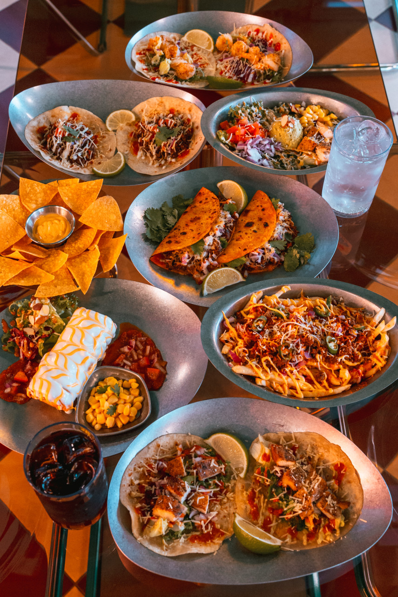

안녕하세요! 맛있는 타코를 찾고 계신가요? 그렇다면, 여러분의 입맛을 사로잡을 최고의 타코집 다섯 곳을 소개해드리겠습니다.
이곳들은 각각의 독특한 개성과 맛으로 멕시코의 진정한 타코를 선사합니다. 지금부터 하나씩 살펴보시죠! 🌮
안녕하세요! 맛있는 타코를 찾고 계신가요? 그렇다면, 여러분의 입맛을 사로잡을 최고의 타코집 다섯 곳을 소개해드리겠습니다.
이곳들은 각각의 독특한 개성과 맛으로 멕시코의 진정한 타코를 선사합니다. 지금부터 하나씩 살펴보시죠! 🌮
✔️ 매장 정보 바로 가기
대전 서구 용문역 3번출구, 대전 괴정동 롯데백화점 뒷편에 위치한 멕시코식당 스프링타코샵 입니다!
매일 나쵸칩을 직접 튀기고 소스를 직접 매장에서 만듭니다!
멕시코 요리 특성상 향신료가 부담스러운 분들도 계실텐데요. 이 곳은 많은 사람들이 멕시코 요리를 즐겼으면 하는 마음으로 부담이 가지 않게 한다고 합니다.
대표 메뉴로 화이타플레터, 쉬림프 타코, 스파이시 핫치킨 타코가 있습니다.
사진으로만 봐도 맛있어 보이네요! 키치한 인테리어와 캐주얼한 분위기, 그리고 쾌적한 컨디션 덕분에 데이트나 모임시에도 편하게 식사도 가능했습니다.
가성비 좋게 멕시코 음식을 즐기고 간단한 안주와 다양한 주류도 있어 한번쯤 방문하여 드셔보시는 것을 추천합니다.
아 그리고 멕시코 음료수도 있다하니 방문해 보세요!
✔️ 매장 정보 바로 가기
두번째로 갈마동에 위치한 "타코갱"입니다. 타코갱은 '타코를 좋아하는 사람들'을 의미합니다.
타코갱은 멕시칸푸드 뿐 아니라 특별한 공간에서 이국적인 경험을 선사합니다.
직접 공수한 4가지 칠리와 신선한 각종 소고기 부위와 한우 사골로 8시간 우려낸 특별메뉴인 비리아 타코 & 라면이 일품입니다.
그리고 신기한 메뉴도 있는데요. 바로 운동 또는 다이어트를 하시는 분들을 위한 프로틴 타코가 있다는 것입니다. 저는 매우 신기했습니다.

저녁에는 도리 갱 토스에 데킬라와 갱스 프라이에 하이볼을 같이 먹는 것도 별미입니다.
힙한 인테리어 덕분에 눈도 즐기고 입도 즐길 수 있는 곳. "타코갱"이었습니다.
✔️ 매장 정보 바로 가기
세번째로 둔산동에 위치한 "밀스"입니다.
누군가에겐 가벼운 식사와 함께 쉬는 공간으로 또 어떤 이에겐 하루의 피로를 덜어내는 공간이 되었으면하는 바램이 담긴 아늑한 공간을 추구하는 곳입니다.
이 곳에는 타코뿐만 아니라 샐러드, 브리또, 퀘사디아등 가볍지만 든든한 한끼를 맛볼 수 있는 곳이었습니다.
깔끔한 분위기 덕분에 쾌적한 곳에서 식사를 할 수 있는 곳입니다.
평소 타코만 먹기엔 살짝 부족하셨 분들은 "밀스"에서 부리또와 퀘사디아를 함께 드시면 더욱더 풍부한 식사시간이 될 수 있는 "밀스"였습니다.
✔️ 매장 정보 바로 가기
네번째로 둔산동에 위치한 "타코센트로"입니다.
이 곳으 외관부터가 매우 키치하고 힙했던 곳입니다.
비리아 타코는 채소가 신선해서 씹는 맛이 좋았습니다. 센트로 타코는 멕시코 특유의 향이 강하지 않았지만 고기 소스도 정말 맛있었어요!
매장에 들어가면 자리가 바형식으로 되어 있으며 조금 협소합니다. 하지만 혼자서 조용히 타코를 즐기고 싶을 때 "타코센트로" 추천합니다.
✔️ 매장 정보 바로 가기
마지막으로 궁동에 위치한 "리코타코"입니다.
대전 궁동에서 9년째 영엽중인 곳으로 거의 10년동안 영업을 했다는 것은 그만큼 맛이 보장된다는 것같습니다.
이 곳은 최소 5년에서 15년차 요리사들이 운영하는 곳으로 신선한 재료와 건강하게 만드는 것이 보이는 곳입니다.
이곳은 소프트 타코, 퀘사디아, 화이타 등 다양한 타코와 멕시코 음식이 있는 곳입니다.
또한 이곳은 다양한 데킬라를 즐길 수 있는 곳으로 요즘 핫한 멕시코 데킬라를 멕시코 음식과 함께 합리적인 가격으로 맛볼 수 있습니다.
인테리어를 이전한지 2년 밖에 되지 않아 깔끔하고 쾌적한 곳에서 음식을 즐기실 수 있습니다.
가족들과 함께 주말을 보내실 때 "리코타코"에서 시간을 보내시면 어떨까요? 이상 궁동에 위치한 "리코타코"였습니다.